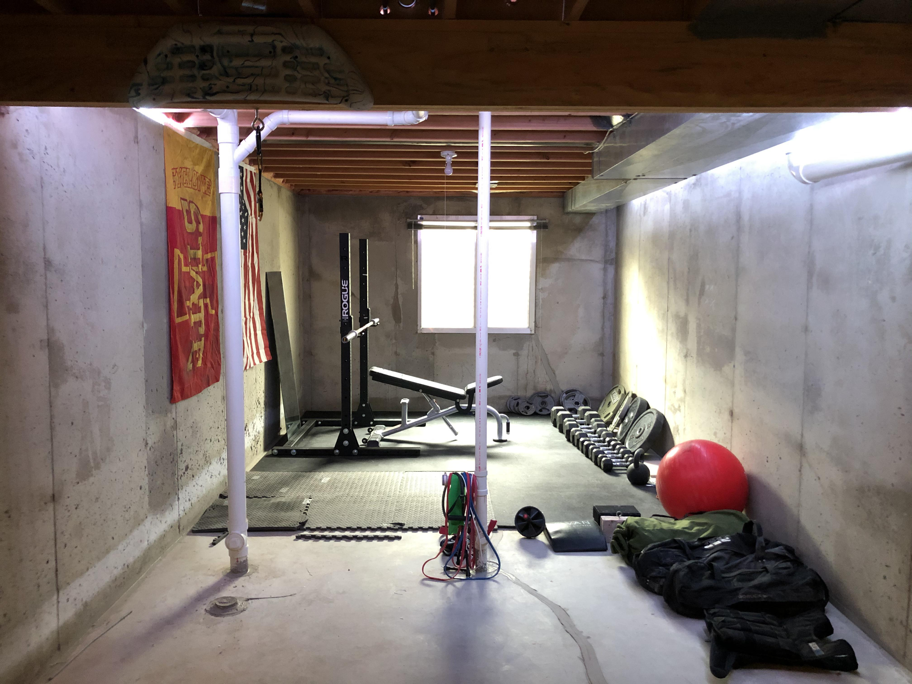
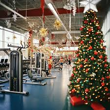
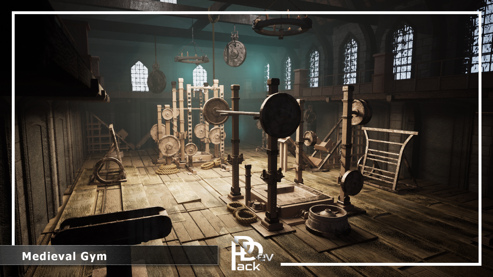
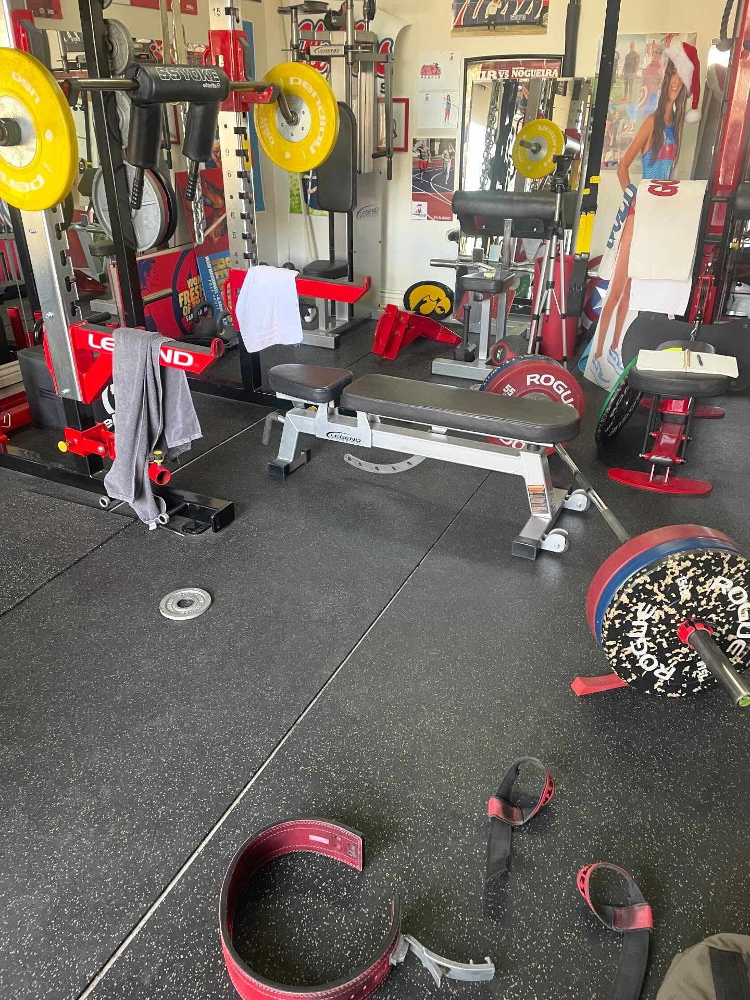
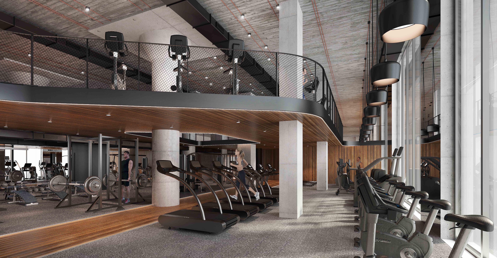

Dumbell & Co.
This is where the game will start off. There won't be that much gameplay here, mainly just story-building, where the manager of the gym tells Chad that he cannot afford the membership because he is broke. Chad offers to clear the dungeon underneath in order to work out at his gym.
Inspiration - Planet Fitness lobby as Planet Fitness is often regarded as a beginner friendly gym.

Goblin Gym
This is the first gym in the dungeon where goblins go to get buff. It includes the tutorial area and teaches the player the core gameplay loop of the game. There are also gym rats on the prowl
Inspiration - We took Inspiration from a musty looking basement gym. The aura gives off vibes that the people who use that gym, the "goblins" aren't very strong.
Elf Gym
The second gym is for the elves and is the first expansive area that allows exploration. The gym rats are also here but they avoid the elves and steal equipment to use for themselves.
Inspiration - We took inspration for this level by looking at a gym that was decorated for the Christmas season. Here is where the Elfs will work out in
 Inspirtation - We tookWizard Gym
Down in the wizard gym we start to see how focus on certain muscle groups grants special moves that are only possible when priortizing different muscle groups. This is also when the player gets their first glimpse of the unnatural.
Inspiration - For this level, we took a look at a "Medieval" themed gym. Here is where the wizards will hangout and "work out" their magic
Body Dungeon
In this area the individual muscle groups have become independant and are roaming on their own. The place contains some equipment but is closer to an animal's den.
Inspiration - For this level, we looked at a gym that looked a bit messy but was also well equiped with equipment
Muscle God Lair
This are is twisted and foul. It contains eldritch horrors that feed off of protein and everything down here is mutated to the extreme form of muscle that it has. The final boss is the muscle god who has claimed all the gym passes.
Inspiration - For the final level, the best of the best of the best muscle men and women work out at these gyms so we took a look into a higher quality of gym. This gym looks exclusive and private
